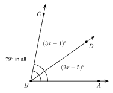
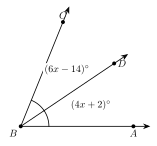
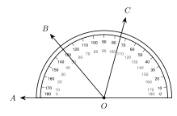
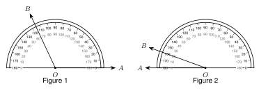

1.2 - Segment and Angle Addition
A truck driver leaves Town A and drives 13 miles to Town B. Then she drives 4 more miles to Town C. How far is it from A to C?
You add: \(13 + 4 = 17\) miles. The whole is the sum of its parts. This is true for segments, and it is also true for angles. In this lesson you use that idea to write equations and find missing lengths and angles.
Printable Guided Notes for this lesson (fill-in notes to print and write on)
🔥 Warm Up
Write the symbol for segment \(AB\). Then write the symbol for the length of segment \(AB\).
Solve \(3x + 4 = 25\).
Solve \(5x - 6 = 2x + 9\).
👥 Learn Together
1.2.1 - Length on a Number Line
A ruler is a number line. To find the length of a segment, subtract the two numbers at its ends.
Example 1: Length on a number line
Point \(A\) is at \(-3\). Point \(B\) is at \(4\). Find \(AB\).
\[ AB = |4 - (-3)| = |7| = 7 \]
You can also count the steps from \(-3\) to \(4\). There are 7.
A length is a distance. We use absolute value so the answer is never negative. For points at \(a\) and \(b\), the length is \[ AB = |a - b|. \] The order does not matter. \(|4 - (-3)| = 7\) and \(|-3 - 4| = 7\).
Point \(P\) is at \(-6\) and point \(Q\) is at \(2\). Find \(PQ\).
Point \(R\) is at \(5\) and point \(S\) is at \(-1.5\). Find \(RS\).
\(|2 - (-6)| = 8\)
\(|-1.5 - 5| = 6.5\)
1.2.2 - Segment Addition
Look at the truck driver again. Town \(B\) is between Town \(A\) and Town \(C\), and all three towns are on one straight road. Then the two short pieces add up to the whole.
If \(B\) is between \(A\) and \(C\) on a line, then \[ AB + BC = AC. \]
Example 2: Segment addition with \(x\)
Point \(B\) is between \(A\) and \(C\). \(AB = 2x + 3\), \(BC = x - 1\), and \(AC = 17\). Find \(x\), \(AB\), and \(BC\).
Step 1. Write the equation.
\[ (2x + 3) + (x - 1) = 17 \]
Step 2. Combine like terms.
\[ 3x + 2 = 17 \]
Step 3. Solve.
\[ 3x = 15 \quad\text{so}\quad x = 5 \]
Step 4. Put \(x = 5\) back in to find each length.
\[ AB = 2(5) + 3 = 13 \qquad BC = 5 - 1 = 4 \]
Step 5. Check. \(13 + 4 = 17\). It works.
Point \(E\) is between \(D\) and \(F\). \(DE = x + 6\), \(EF = 3x - 2\), and \(DF = 32\). Find \(x\), \(DE\), and \(EF\).
\((x + 6) + (3x - 2) = 32\), so \(4x + 4 = 32\) and \(x = 7\).
\(DE = 13\) and \(EF = 19\). Check: \(13 + 19 = 32\).
Segment addition only works when \(B\) is on the line between \(A\) and \(C\). If \(AB = 7\) and \(BC = 5\), then \(AC\) is \(12\) only when \(B\) is between them. If \(B\) is on the other side of \(A\), then \(AC = 2\).
1.2.3 - Congruent Segments and Midpoints
Two segments can have the same length. Then we say they are congruent. We use the symbol \(\cong\).
\[ \overline{AB} \cong \overline{CD} \quad\text{means}\quad AB = CD \]
Use \(\cong\) for figures, like segments. Use \(=\) for numbers, like lengths. Tick marks on a figure show which segments are congruent.
The midpoint of a segment is the point exactly halfway between the endpoints. It cuts the segment into two congruent segments. A segment bisector is any point, line, ray, or segment that goes through the midpoint.
Example 3: A midpoint

\(M\) is the midpoint of \(\overline{AB}\). \(AM = 3x + 4\) and \(MB = 5x - 6\). Find \(x\) and \(AB\).
Step 1. The two halves are equal.
\[ 3x + 4 = 5x - 6 \]
Step 2. Solve.
\[ 10 = 2x \quad\text{so}\quad x = 5 \]
Step 3. Find each half. \(AM = 3(5) + 4 = 19\). \(MB = 5(5) - 6 = 19\).
Step 4. Add the halves. \(AB = 19 + 19 = 38\).
\(M\) is the midpoint of \(\overline{PQ}\). \(PM = 4x - 3\) and \(MQ = 2x + 9\). Find \(x\) and \(PQ\).
\(4x - 3 = 2x + 9\), so \(2x = 12\) and \(x = 6\).
\(PM = 21\), so \(PQ = 42\).
Example 4: Looks or marks?
Which point is the midpoint for sure?
\(M\) in Figure 1. The tick marks show \(\overline{AM} \cong \overline{MB}\).
We cannot tell for \(N\) in Figure 2. It looks close to the middle, but there are no marks. (It is really a little left of the middle.)
1.2.4 - Angle Addition and Angle Bisectors
Angles add the same way segments do. A point \(D\) is in the interior of \(\angle ABC\) when it is between the two sides of the angle.
If \(D\) is in the interior of \(\angle ABC\), then \[ m\angle ABD + m\angle DBC = m\angle ABC. \]
Example 5: Angle addition with \(x\)

\(m\angle ABD = (2x + 5)^\circ\), \(m\angle DBC = (3x - 1)^\circ\), and \(m\angle ABC = 79^\circ\). Find \(x\) and each angle.
\[ (2x + 5) + (3x - 1) = 79 \quad\text{so}\quad 5x + 4 = 79 \quad\text{so}\quad x = 15 \]
\(m\angle ABD = 2(15) + 5 = 35^\circ\) and \(m\angle DBC = 3(15) - 1 = 44^\circ\). Check: \(35 + 44 = 79\).
\(m\angle XYW = (x + 20)^\circ\), \(m\angle WYZ = (2x + 4)^\circ\), and \(m\angle XYZ = 90^\circ\). Find \(x\) and each angle.
\(3x + 24 = 90\), so \(x = 22\).
\(m\angle XYW = 42^\circ\) and \(m\angle WYZ = 48^\circ\). Check: \(42 + 48 = 90\).
An angle bisector is a ray that cuts an angle into two congruent angles.
Example 6: An angle bisector

Ray \(\overrightarrow{BD}\) bisects \(\angle ABC\). \(m\angle ABD = (4x + 2)^\circ\) and \(m\angle DBC = (6x - 14)^\circ\). Find \(x\) and \(m\angle ABC\).
The two parts are equal: \(4x + 2 = 6x - 14\), so \(16 = 2x\) and \(x = 8\).
Each part is \(4(8) + 2 = 34^\circ\). The whole angle is \(34 + 34 = 68^\circ\).
Ray \(\overrightarrow{QS}\) bisects \(\angle PQR\). \(m\angle PQS = (5x - 7)^\circ\) and \(m\angle SQR = (3x + 13)^\circ\). Find \(x\) and \(m\angle PQR\).
\(5x - 7 = 3x + 13\), so \(2x = 20\) and \(x = 10\).
Each part is \(43^\circ\), so \(m\angle PQR = 86^\circ\).
Reading a protractor. A protractor measures an angle in degrees. It has two scales, an outer scale and an inner scale. One scale starts at \(0\) on the right. The other starts at \(0\) on the left. Put one side of the angle on a \(0\). Then read the scale that starts at that \(0\).
Example 7: A protractor

Find \(m\angle AOB\).
Side \(\overrightarrow{OA}\) points left, along the \(0\) of the inner scale. Read the inner scale where \(\overrightarrow{OB}\) crosses it: \(50^\circ\).
The outer scale says \(130^\circ\) at the same place. That is the wrong scale. The angle looks small, so \(50^\circ\) makes sense. It is acute.
Find \(m\angle AOC\).
Find \(m\angle BOC\). (Hint: use angle addition.)
\(\overrightarrow{OC}\) is at \(75^\circ\) on the outer scale, so it is \(105^\circ\) on the inner scale. \(m\angle AOC = 105^\circ\).
\(m\angle AOB + m\angle BOC = m\angle AOC\), so \(m\angle BOC = 105 - 50 = 55^\circ\).
✍️ Practice On Your Own
Find the length on a number line.
\(A\) is at \(-7\) and \(B\) is at \(2\). Find \(AB\).
\(C\) is at \(-4\) and \(D\) is at \(-11\). Find \(CD\).
\(E\) is at \(5.5\) and \(F\) is at \(-2.5\). Find \(EF\).
\(P\) is at \(3\) and \(PQ = 10\). Where could \(Q\) be? Give both answers.
Segment addition. Use the figure for problems 5 to 7.

Find \(PR\).
Find \(QS\).
Find \(PS\).
Segment addition with \(x\).
\(B\) is between \(A\) and \(C\). \(AB = 3x + 1\), \(BC = 2x + 4\), and \(AC = 35\). Find \(x\), \(AB\), and \(BC\).
\(D\) is between \(C\) and \(E\). \(CD = x + 9\), \(DE = 4x - 3\), and \(CE = 51\). Find \(x\), \(CD\), and \(DE\).
Kofi’s farm is at mile marker 14 on a straight highway. The gas station is at mile marker 31. The lake is at mile marker 52. How far is it from Kofi’s farm to the lake? How far is it from the gas station to the lake?
Amira says \(AB = 7\), \(BC = 5\), and \(AC = 15\) for three points on a line. Can she be right if \(B\) is between \(A\) and \(C\)? Explain.
Congruent segments and midpoints.
\(M\) is the midpoint of \(\overline{AB}\) and \(AM = 12\). Find \(AB\).
\(M\) is the midpoint of \(\overline{XY}\) and \(XY = 30\). Find \(MY\).
\(M\) is the midpoint of \(\overline{CD}\). \(CM = 2x + 1\) and \(MD = 4x - 9\). Find \(x\) and \(CD\).
\(M\) is the midpoint of \(\overline{ST}\). \(ST = 6x - 8\) and \(SM = 11\). Find \(x\).
Line \(\ell\) bisects \(\overline{PQ}\) at \(R\). \(PR = 3x + 2\) and \(RQ = 5x - 12\). Find \(x\) and \(PQ\).
\(AB = 9\) and \(CD = 9\). Write one statement with \(=\) and one statement with \(\cong\).
What does the figure show? Use the figure for problems 18 and 19.
Is \(G\) the midpoint of \(\overline{EF}\)? How do you know?
Is \(K\) the midpoint of \(\overline{HJ}\)? How do you know?
Find the mistake.
- \(B\) is between \(A\) and \(C\). \(AB = 4x - 2\), \(BC = 2x + 8\), and \(AC = 42\). Diego writes \(4x - 2 = 2x + 8\) and gets \(x = 5\). What mistake did he make? Find the correct \(x\).
Angle addition and bisectors.
\(D\) is in the interior of \(\angle ABC\). \(m\angle ABD = 28^\circ\) and \(m\angle DBC = 47^\circ\). Find \(m\angle ABC\).
\(W\) is in the interior of \(\angle XYZ\). \(m\angle XYZ = 112^\circ\) and \(m\angle XYW = 70^\circ\). Find \(m\angle WYZ\).
\(m\angle ABD = (3x + 2)^\circ\), \(m\angle DBC = (2x + 8)^\circ\), and \(m\angle ABC = 100^\circ\). Find \(x\) and each angle.
Ray \(\overrightarrow{BD}\) bisects \(\angle ABC\). \(m\angle ABD = (7x - 5)^\circ\) and \(m\angle DBC = (5x + 9)^\circ\). Find \(x\) and \(m\angle ABC\).
Ray \(\overrightarrow{BD}\) bisects \(\angle ABC\) and \(m\angle ABC = 126^\circ\). Find \(m\angle ABD\).
Protractors. Find the measure of each angle \(\angle AOB\) and classify it. Use the figure for problems 26 and 27.

Figure 1
Figure 2
Test practice
Point \(B\) is between \(A\) and \(C\) on a line. \(AB = x + 4\), \(BC = 2x - 1\), and \(AC = 24\). What is \(BC\)?
A. \(7\)
B. \(11\)
C. \(13\)
D. \(24\)Ray \(\overrightarrow{BD}\) bisects \(\angle ABC\). \(m\angle ABD = (3x + 6)^\circ\) and \(m\angle ABC = (10x - 8)^\circ\). What is \(m\angle DBC\)?
A. \(5^\circ\)
B. \(21^\circ\)
C. \(42^\circ\)
D. \(15^\circ\)
Challenge
Points \(A\), \(B\), and \(C\) are on a line. \(AB = 12\) and \(BC = 7\). Find every possible value of \(AC\). Draw a picture for each one.
\(M\) is the midpoint of \(\overline{AB}\). \(N\) is the midpoint of \(\overline{AM}\). \(AN = 5\). Find \(AB\).